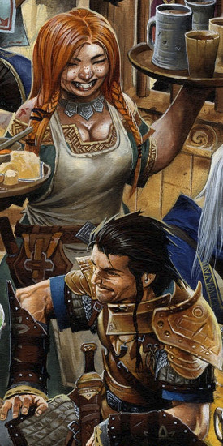
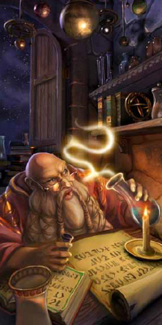
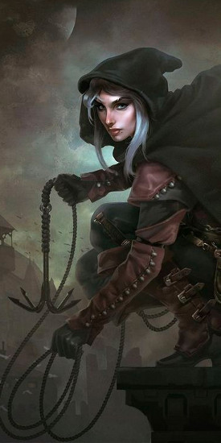
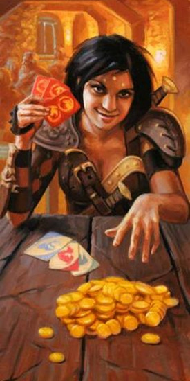
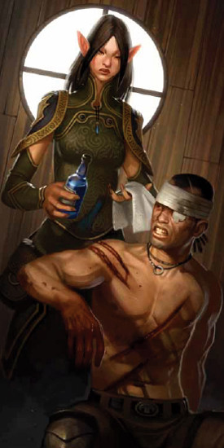
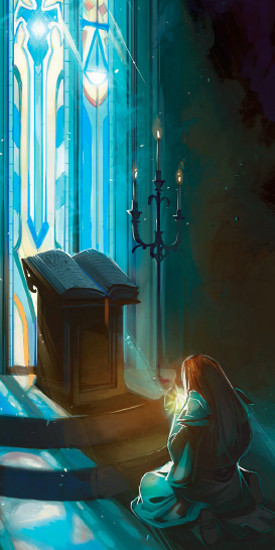
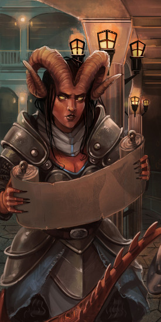

Temps morts (XGtE)
Règles officielles issues du Xanathar's Guide to Everything, publiées initialement dans la rubrique Unearthed Arcana.
Dans une campagne classique, les personnages commencent souvent au niveau 1, participent à des aventures épiques, et atteignent le niveau 10 (voire plus) de manière assez rapide. Ce rythme fonctionne très bien pour de nombreuses campagnes, mais il arrive que des MD préfèrent construire des campagnes avec des temps de pause, durant lesquels les aventuriers pourront faire autre chose que partir à l'aventure. Les règles de temps morts proposées ici peuvent être considérées comme des alternatives à celles du Manuel des Joueurs et du Guide du Maître. Vous pouvez aussi vous en inspirer pour créer de nouvelles activités.
En introduisant pendant ces temps morts des activités qui durent des semaines ou des mois, vous pouvez augmenter la durée de votre campagne et ainsi permettre des évolutions majeures du monde dans laquelle elle se déroule. Des guerres débutent et se concluent, des tyrans accèdent au pouvoir et sont destitués, des lignées royales sont créées et s'éteignent. Les règles de gestion des temps morts permettent aussi aux personnages de dépenser les trésors amassés lors de leurs aventures.
Le système de gestion des temps morts présenté ici est construit sur deux éléments de base. Tout d'abord, il présente le concept d'antagoniste. Ensuite, il détaille plusieurs activités de temps morts pour les personnages.
Antagonistes
Les antagonistes sont des PNJ qui s'opposent activement aux personnages ou dont les objectifs vont à l'encontre de ceux du groupe de joueurs. Il peut s'agir de personnes d'alignement mauvais que les personnages ont déjà rencontrées lors de leurs aventures ou que vous prévoyez d'utiliser dans le futur. Ou bien de personnes d'alignement bon ou neutre qui sont opposés aux personnages, car ils sont rivaux, parce qu'ils ont des objectifs contraires à ceux des personnages, ou encore parce qu'ils ont de l'aversion envers le groupe. Un fidèle du prince démon Orcus dont les plans maléfiques ont été déjoués par les personnages, un marchand ambitieux qui cherche à contrôler la ville d'une main de fer, ou un prêtre de Helm qui est convaincu que les personnages sont des fauteurs de trouble, sont tous de bons exemples d'antagonistes.
Les objectifs d'un antagoniste peuvent aussi évoluer dans le temps. Pendant que les personnages pratiquent des activités entre deux aventures, les antagonistes continuent de mettre à exécution leurs plans contre les personnages.
Créer un antagoniste
La première étape de la création d'un antagoniste consiste à construire un PNJ ou à en choisir un parmi ceux que vous avez déjà utilisés. Il est conseillé d'avoir deux ou trois antagonistes opérant au même moment. Au moins l'un d'entre eux devrait être mauvais, tandis que les autres peuvent être neutres ou bons. La source de leur haine envers les personnages peut venir d'un antagonisme social, politique, ou être due à des attaques directes. Les meilleurs antagonistes sont ceux qui jouent sur les relations personnelles des personnages. Trouvez des liens dans l'historique des personnages ou dans les aventures précédentes afin de justifier les actions des antagonistes. Les meilleurs ennuis pour les personnages sont toujours ceux qu'ils ont eux-mêmes déclenchés.
| d20 | Antagoniste |
|---|---|
| 1 | Un collecteur d'impôts qui est persuadé que les personnages essaient de frauder. |
| 2 | Un politicien qui pense que les personnages causent plus de problèmes qu'ils n'apportent d'aide. |
| 3 | Un haut-prêtre qui s'inquiète du fait que les personnages font diminuer le prestige de son temple. |
| 4 | Un magicien qui pense que les personnages sont la cause des problèmes qu'il a rencontrés récemment. |
| 5 | Un groupe d'aventuriers rivaux. |
| 6 | Un barde qui aime déclencher des scandales. |
| 7 | Un rival d'enfance d'un des personnages ou un membre d'un clan rival. |
| 8 | Un membre de la famille d'un des personnages qui s'est senti méprisé. |
| 9 | Un marchand qui accuse les personnages pour ses récents déboires. |
| 10 | Un aventurier ambitieux qui cherche à laisser sa marque dans l'histoire du monde. |
| 11 | Un membre de la famille ou un ancien allié d'un des ennemis des aventuriers. |
| 12 | Un fonctionnaire qui cherche à restaurer sa réputation. |
| 13 | Un dangereux ennemi, prenant l'apparence d'un rival au sein de la communauté. |
| 14 | Un ami qui cherche à entraîner les aventuriers du côté du mal. |
| 15 | Un ancien amour rejeté. |
| 16 | Un politicien opportuniste qui cherche un bouc émissaire. |
| 17 | Un aristocrate déloyal qui cherche à déclencher une révolution. |
| 18 | Un tyran en pleine ascension qui ne tolère aucune opposition. |
| 19 | Un noble en exil qui cherche à se venger. |
| 20 | Un fonctionnaire corrompu qui devient paranoïaque et veut empêcher ses crimes d'être révélés. |
Pour qu'un antagoniste soit crédible, il faut qu'il ait de bonnes raisons de s'opposer aux personnages. Réfléchissez à ce qui motive l'antagoniste, ainsi qu'aux raisons qui font que les personnages se trouvent sur son chemin et doivent être éliminés. Pensez aussi à définir des moyens permettant de résoudre ce conflit.
Objectifs. Lorsque vous avez défini ce qui motive un antagoniste, il est temps de réfléchir à ses objectifs. Qu'est-ce que cet antagoniste essaie d'accomplir ? Idéalement, ses objectifs ont un effet sur les personnages, ou sur quelque chose ou quelqu'un qui leur est cher. Par exemple, un antagoniste pourrait avoir pour objectif de prendre le contrôle d'une ville, de tuer l'un des personnages, ou encore d'aider un temple à devenir le centre religieux le plus important de la région.
Ressources. Réfléchissez aux ressources à la disposition de l'antagoniste. A-t-il accès à de fortes sommes d'argent lui permettant de corrompre les employés de la cité ? Peut-il faire appel à une milice de fanatiques prêts à mourir pour sa cause ? A-t-il une influence particulière sur une guilde locale ou un temple des environs ? Faites une liste des ressources dont dispose votre antagoniste et prenez le temps de réfléchir aux moyens de les utiliser pour réaliser son plan.
Plans. La présence d'un antagoniste dans la campagne se traduit par les actions que celui-ci entreprend ou par les événements qui se produisent en fonction de ses objectifs. Chaque fois que vous résolvez une ou plusieurs semaines de temps morts, choisissez une manière de faire avancer les plans d'un antagoniste et introduisez-la dans le jeu. Réfléchissez à la façon dont un antagoniste pourrait agir afin de concrétiser des plans précis, et notez trois ou quatre types d'actions qu'il pourrait entreprendre. Certaines peuvent être dérivées des activités de temps morts décrites ci-après, mais il s'agit le plus souvent de choses spécifiques à l'antagoniste.
L'action d'un antagoniste peut être une attaque directe, comme une tentative d'assassinat, qui se jouera pendant une session. Ou bien une activité de fond qui modifie la campagne d'une manière ou d'une autre. Par exemple, un antagoniste qui veut augmenter le prestige du temple d'un dieu de la guerre pourrait organiser une fête avec des boissons, de la nourriture et des jeux de gladiateurs. Même si les personnages ne sont pas directement impliqués, l'événement sera un sujet de conversation en ville.
Certains éléments des plans d'un antagoniste peuvent aussi impliquer des événements du monde qui ne sont pas sous son contrôle. Et selon qu'un tel événement peut être facilement anticipé ou non, le plan peut être confronté à des imprévus.
Exemple d'antagoniste : Marina Rodemus
Le clan Rodemus était autrefois une puissante famille de marchands, toutefois, il y a environ trente ans, ils ont quitté la ville du jour au lendemain. Aujourd'hui, Marina Rodemus, la fille cadette de la famille, est revenue en ville afin de restaurer le prestige de sa famille. En réalité, les Rodemus ont fui la région car ils ont découvert qu'ils étaient atteints de lycanthropie. Terrifiés à l'idée de ne pas pouvoir cacher leur secret dans leur ville natale, ils ont alors fusionné avec un clan de rat-garous, vendu toutes leurs possessions et se sont exilés dans une province lointaine. Marina a rapidement progressé au sein du clan de rat-garous et a repris le chemin de sa ville natale avec un petit contingent de disciples afin de reprendre la place qui lui revient de droit dans l'aristocratie de la ville. Si elle venait à ne pas parvenir à remplir ses objectifs, elle a juré de quitter la ville après l'avoir transformée en ruines.
Objectifs. Marina veut devenir la plus importante de tous les marchands de la ville et gagner un respect si profond que même un prince se prosternerait à ses pieds.
Ressources. Marina a accès à une petite fortune en pièces d'or ; elle possède les compétences de rat-garou, d'alchimiste et de nécromancien ; elle est à la tête d'un groupe de rat-garous entièrement dévoués à sa cause ; un gardien animé la protège.
Plans. Marina tente de discréditer et de ruiner les autres marchands de la ville. Ses rat-garous espionnent ses rivaux et entrent par effraction dans les entrepôts où ils font appel à des hordes de rats pour détruire tous les biens des concurrents. Si le plan de Marina ne porte pas ses fruits, elle mettra en application un terrible stratagème. Ses compétences en alchimie lui ont permis de concevoir une terrible variante du virus de la peste. Elle utilisera alors ses hordes de rats afin de propager cette terrible épidémie en ville. Si elle ne peut pas contrôler la ville, personne ne le pourra.
| Type | Description |
|---|---|
| Événement | Les hordes de rats qui parcourent la ville deviennent un véritable problème et le peuple demande à ce que les autorités agissent. |
| Action | Les attaques de goblinoïdes sur les caravanes marchandes deviennent de plus en plus fréquentes et les marchands parlent d'armer une milice. Marina participe généreusement à ce projet. |
| Action | Les entrepôts sont envahis par les rats, détruisant des biens pour une valeur totale de plusieurs milliers de pièces d'or. Marina accuse la garde de la cité de ne pas protéger la population. |
| Action | Si les personnages interfèrent dans les plans de Marina, celle-ci enverra ses assassins à leurs trousses. |
| Événement | Une tempête provoque des inondations dans la ville, faisant ressortir des dizaines de rats morts des égouts de la ville. La population est alors terrorisée à l'idée d'une épidémie. |
| Action | Marina fait courir des rumeurs disant que les personnages, ou d'autres concurrents, sont responsables de l'épidémie qui se répand en ville. |
Exemple d'antagoniste : le grand prêtre Cheldar
Le temple de Pholtus, le rigide dieu du Soleil, désire s'étendre. Même si le temple n'est installé en ville que depuis deux ans, il a déjà une très forte influence, principalement grâce aux talents d'orateur de son grand prêtre Cheldar.
Objectifs. Cheldar veut que le temple de Pholtus devienne la religion principale de la ville en ramenant la paix et la stabilité pour tous. Il considère que les aventuriers qui séjournent en ville sont une source de troubles et désire avoir un plus grand contrôle sur leurs actions ou leur faire quitter la ville.
Ressources. Le grand prêtre Cheldar est un très bon orateur au charisme démesuré, son dieu lui donne la capacité de lancer des sorts et il a l'oreille attentive d'une centaine de disciples qui sont récemment devenus des adeptes du temple.
Plans. Cheldar est extrêmement sévère et rigoureux, mais fondamentalement bon. Il cherche à obtenir le soutien des citoyens en usant de charité, en promouvant la paix, et en faisant respecter la loi et l'ordre dans la cité. Toutefois, il est suspicieux vis-à-vis des aventuriers car il est convaincu qu'ils ne sont qu'une bande de fauteurs de troubles qui vont déranger la paix qui règne dans la cité. Il considère que seules les autorités officielles et les temples devraient être impliqués dans la gestion des crises et des problèmes pouvant survenir en ville. Il a de très fortes convictions mais si les personnages œuvrent pour le bien, il pourrait devenir un allié.
| Type | Description |
|---|---|
| Événement | À l'occasion du grand festival de Pholtus qui se déroule pendant le solstice d'hiver, les rues sont remplies de fidèles qui font une veillée de 24 heures, équipés de torches. Ils proposent à tous de la nourriture, des boissons, et un abri dans le Temple de Pholtus. |
| Action | Cheldar, accompagné d'un petit groupe de fidèles, entre dans une taverne où les aventuriers séjournent, et tente de convaincre les personnes présentes de se convertir. Une poignée d'aventuriers PNJ choisissent de le suivre. |
| Action | À l'occasion d'un discours qu'il donne sur la place de la ville, Cheldar accuse les aventuriers d'avoir dérangé des forces maléfiques et d'être à l'origine des problèmes qui s'abattent sur la ville. |
| Événement | Les personnages se rendent compte qu'alors que l'opinion publique tourne en faveur de Cheldar, les aventuriers reçoivent un accueil pour le moins glacial dans la ville. |
| Action | Partant du principe que les aventuriers doivent participer à la protection de la ville, Cheldar demande qu'ils soient soumis à des taxes extrêmement élevées. Son argumentaire se base sur le fait que ces nomades peuvent simplement quitter la ville si celle-ci traverse une période trouble alors que le peuple n'a pas ce choix. |
Activités de temps morts
Les activités de temps morts sont des tâches qui peuvent être réalisées généralement en une semaine de travail (5 jours) ou plus. Ces activités incluent par exemple l'achat ou la création d'objets magiques, l'accomplissement de méfaits (cambriolages, braquages, ...) ou encore l'exercice d'une profession. Un personnage choisit une activité et paie le coût associé, aussi bien en termes de temps qu'en termes financier. En tant que MD, vous pouvez suivre les règles régissant cette activité et informer le joueur des résultats, ainsi que de toute éventuelle complication survenue lors de sa pratique.
Il est souvent intéressant de gérer les temps morts entre les sessions de jeu. Par exemple, vous pouvez laisser vos joueurs choisir les activités que les personnages envisagent de pratiquer à la fin d'une session, puis communiquer avec eux par email jusqu'à votre prochaine session.
Gérer les activités
Chaque activité a des règles spécifiques qui vous indiquent comment déterminer son résultat. La plupart d'entre elles demandent un jet de caractéristique. La plupart des activités nécessitent au moins une semaine de travail (5 jours). Certaines pourront durer des jours, des semaines (7 jours), voire des mois (30 jours). Un personnage devra passer au moins 8 heures par jour à pratiquer l'activité pour que la journée soit décomptée du total.
Les jours de travail ne sont pas obligatoirement consécutifs ; vous pouvez les répartir sur une période plus longue que celle requise par l'activité. Mais cette période ne devrait toutefois pas être excéder deux fois le temps requis, sinon vous devrez introduire des complications supplémentaires (voir ci-dessous) et éventuellement doubler les coûts de l'activité pour représenter l'inefficacité de la progression du personnage.
Complications
Chaque activité possède une liste de complications que vous pouvez utiliser pour mettre vos joueurs en péril et qui peuvent donner lieu à des aventures complètes, permettre d'introduire de nouveaux PNJ ou donner du fil à retordre aux personnages. Chacune de ces sections a une table qui propose des complications possibles. Vous pouvez déterminer une complication de façon aléatoire en jetant un dé, en choisir une particulière ou en créer une, puis la partager avec le joueur.
Exemples d'activités de temps morts
Les activités suivantes sont disponibles pour tous les personnages qui ont les moyens de les pratiquer. Mais en tant que MD, vous pouvez choisir d'en interdire certaines ou d'en ajouter d'autres. Les activités que vous autorisez peuvent dépendre de l'endroit où se trouvent les personnages. Par exemple, vous pouvez ne pas permettre la création d'objets magiques ou décider que les personnages sont dans une ville trop isolée pour qu'elle possède un marché où l'on peut acheter de tels objets.
Acheter un objet magique
Acheter un objet magique nécessite un investissement en temps et en argent afin de pouvoir entrer en contact avec des gens prêts à vendre ce type d'objets. Et même si ces conditions sont réunies, rien ne garantit que les objets recherchés soient disponibles.
Ressources. Afin de trouver des objets magiques, un personnage doit investir une semaine de travail et un minimum de 100 po. Dépenser plus d'argent ou investir plus de temps dans cette activité augmente vos chances de trouver un objet magique de bonne qualité.
Résultat. Un personnage ayant pour objectif d'acheter un objet magique doit procéder à un jet de Charisme (Persuasion) afin de déterminer la qualité du vendeur. Le personnage peut appliquer un bonus de +1 pour chaque semaine de travail après la première, ainsi qu'un bonus de +1 pour chaque tranche de 100 po après les premiers 100 po dépensés. Ce bonus ne peut dépasser +10. Comme le montre la table Achat d'objets magiques, le résultat du jet indique la table du Guide du Maître à utiliser afin de déterminer les objets disponibles à la vente.
En utilisant la table Prix des objets magiques, vous pouvez alors déterminer le prix des objets disponibles à la vente, en vous basant sur leur rareté. Diviser par deux le prix pour des objets consommables comme les potions ou les parchemins. Comme toujours, en tant que MD, la décision finale vous revient lorsqu'il s'agit de déterminer quels objets sont disponibles et leur prix, quel que soit le résultat que vous ayez obtenu dans les tables. Si les personnages sont à la recherche d'un objet spécifique, vous devez d'abord décider si vous désirez autoriser cet objet dans le jeu. Si tel est le cas, vous pouvez inclure cet objet dans la liste des objets disponibles pour un jet de 10 ou plus s'il est commun, pour un jet de 15 ou plus s'il est peu commun, pour un jet de 20 ou plus s'il est rare, pour un jet de 25 ou plus s'il est très rare, ou pour un jet de 30 ou plus s'il est légendaire.
| Jet de dé | Résultat |
|---|---|
| 1-5 | Lancez 1d6 fois un dé sur la table des Objets Magiques A. |
| 6-10 | Lancez 1d4 fois un dé sur la table des Objets Magiques B. |
| 11-15 | Lancez 1d4 fois un dé sur la table des Objets Magiques C. |
| 16-20 | Lancez 1d4 fois un dé sur la table des Objets Magiques D. |
| 21-25 | Lancez 1d4 fois un dé sur la table des Objets Magiques E. |
| 26-30 | Lancez 1d4 fois un dé sur la table des Objets Magiques F. |
| 31-35 | Lancez 1d4 fois un dé sur la table des Objets Magiques G. |
| 36-40 | Lancez 1d4 fois un dé sur la table des Objets Magiques H. |
| 41+ | Lancez 1d4 fois un dé sur la table des Objets Magiques I. |
| Rareté | Prix demandé * |
|---|---|
| Commun | (1d6 + 1) x 10 po |
| Peu commun | 1d6 x 100 po |
| Rare | 2d10 x 1000 po |
| Très rare | (1d4 + 1) x 10 000 po |
| Légendaire | 2d6 x 25 000 po |
* la moitié pour un objet consommable comme une potion ou un parchemin
Complications. L'achat d'objets magiques est une activité pleine de dangers. La grande quantité d'argent en jeu et le pouvoir de ces objets attirent de nombreuses personnes aux mauvaises intentions (voleurs, escrocs, ...). Si vous voulez rendre les choses plus vivantes et intéressantes pour les personnages, vous pouvez lancer un dé sur la table Complications pour l'achat d'un objet magique.
| d12 | Complication |
|---|---|
| 1 | L'objet est un faux objet magique, substitué au vrai par un ennemi.* |
| 2 | L'objet est dérobé par un groupe d'ennemi.* |
| 3 | L'objet est maudit par un dieu. |
| 4 | Le propriétaire original de l'objet est prêt à tuer pour le récupérer. Les ennemis des personnages répandent la nouvelle de son acquisition.* |
| 5 | L'objet est la clé d'une prophétie maléfique. |
| 6 | Le vendeur est assassiné juste avant que la transaction ait lieu.* |
| 7 | Le vendeur est un démon qui cherche à négocier. |
| 8 | L'objet est la clé qui permet de libérer un être maléfique. |
| 9 | Un autre acheteur cherche aussi acquérir l'objet et fait doubler son prix.* |
| 10 | L'objet contient un esprit intelligent réduit à l'esclavage. |
| 11 | L'objet est lié à un culte. |
| 12 | Les ennemis des personnages répandent des rumeurs disant que l'objet est maléfique.* |
* un antagoniste peut être impliqué dans cette complication.
Faire la fête
Faire la fête est une des activités les plus couramment pratiquées pendant les temps morts. Entre deux aventures, il est toujours agréable de boire un verre dans une taverne en compagnie de ses amis !
Ressources. Un personnage qui choisit de faire la fête passera une semaine de travail à manger de la bonne nourriture, à se désaltérer avec des alcools forts et à rencontrer des gens. Le joueur devra choisir s'il compte faire la fête avec le peuple (10 po) ou la bourgeoisie (50 po). Pour faire la fête avec l'aristocratie locale (250 po), le personnage devra au préalable avoir accès à ce milieu, soit par son propre statut social (si le personnage est un noble), soit grâce aux alliés que le personnage se sera fait dans ce milieu au fil des aventures. Un personnage peut aussi utiliser un kit de déguisement et la compétence Tromperie pour se faire passer pour un noble visitant une ville éloignée.
Résultat. Après avoir passé une semaine de travail à faire la fête, un personnage aura probablement eu l'occasion de se faire de nouveaux contacts. Faites un jet de Charisme (Persuasion) et déterminez le résultat en utilisant la table ci-dessous.
| Jet de dé | Résultat |
|---|---|
| 1-5 | Le personnage s'est fait un ennemi. |
| 6-10 | Rien d'important ne s'est passé. |
| 11-15 | Le personnage s'est fait un allié. |
| 16-20 | Le personnage s'est fait deux alliés. |
| 21+ | Le personnage s'est fait trois alliés. |
Les nouveaux contacts sont des PNJ qui ont maintenant un lien avec le personnage. Chacun d'entre eux doit maintenant une faveur au personnage ou, au contraire, ont une rancune envers lui. Un contact ennemi va œuvrer contre le personnage, tentant de placer des obstacles sur sa route, mais il n'ira pas jusqu'à commettre un crime. Les contacts alliés sont des amis qui aideront le personnage s'ils le peuvent, mais n'iront pas jusqu'à mettre leur vie en danger pour lui.
Les contacts au sein du peuple peuvent être des criminels, des fermiers, des mercenaires, des gardes de la ville ou toute autre personne qui fréquenterait les tavernes les moins chères de la ville. Les contacts au sein de la bourgeoisie peuvent être des membres d'une guilde, des lanceurs de sorts, des fonctionnaires de la cité ou toute autre personne qui fréquenterait les établissements huppés de la ville. Les contacts au sein de l'aristocratie locale seront des nobles et leurs serviteurs directs. Dans ce cas-là, faire la fête consiste à participer à des banquets formels, des dîners d'état, etc. Une fois qu'un contact a aidé ou nuit à un personnage, ce dernier doit recommencer à faire la fête afin de regagner son lien avec le PNJ.
Un contact allié donne un coup de main à un personnage une seule fois, pas à vie. Les contacts resteront toutefois amicaux et peuvent aider dans le jeu de rôle, mais ils ne garantissent pas une quelconque aide. Vous pouvez décider que les contacts seront des PNJ spécifiques comme le tenancier de l'auberge de la Belette Cendrée, ou encore le garde assigné à la surveillance de la porte ouest de la ville. Faire cela donnera aux joueurs des options concrètes pour agir et amènera du dynamisme à votre campagne en incluant les personnages de manière plus vivante dans la région. D'un autre côté, il peut s'avérer compliqué de se souvenir de tous les PNJ et un contact peut devenir complètement inutile s'il n'est pas utilisé dans l'aventure. L'alternative est alors de donner au joueur la possibilité de se faire un contact à tout moment après avoir fait la fête pendant un temps mort. Quand le personnage est dans la zone dans laquelle il a fait la fête, le joueur peut "dépenser" un contact allié et dire que le PNJ qu'ils viennent de rencontrer est en fait son contact, si tant est que le MD l'autorise et que le contact soit de la bonne catégorie sociale. Le joueur devra alors donner une bonne raison pour que ce PNJ soit son contact et l'inclure dans le jeu. Mais la meilleure solution est probablement d'utiliser un mélange de ces deux approches, ce qui donnera de la profondeur à votre campagne, tout en gardant de la flexibilité et en s'assurant que les joueurs pourront utiliser les contacts qu'ils ont créé lors des temps morts. Le même procédé peut bien évidemment être appliqué aux contacts ennemis. Vous pouvez dire à un joueur qu'un nouveau PNJ doit être évité par le personnage ou au contraire introduire ce PNJ lors d'un moment ennuyeux pour jouer une scène dramatique.
À chaque instant, un personnage peut avoir un nombre de contacts maximum égal à 1 + son modificateur de Charisme (minimum 1). Les relations nouées pendant l'aventure ne comptent pas dans ce total, il ne s'agit là que des contacts qui peuvent être "utilisés" à tout moment.
Complications. Un personnage qui choisit de faire la fête encoure le risque de se retrouver pris dans une bagarre, d'être la cible de rumeurs, et de se construire une mauvaise réputation en ville. De manière générale, on peut considérer qu'il y a environ 10% de chances que faire la fête pendant une semaine de travail débouche sur une complication.
| d10 | Complication |
|---|---|
| 1 | Un pickpocket vous dérobe 1d10 x 5 po.* |
| 2 | Une bagarre de taverne vous laisse une cicatrice.* |
| 3 | Vous avez un vague souvenir d'avoir fait quelque chose d'extrêmement illégal, mais vous ne parvenez pas à vous souvenir quoi. |
| 4 | Vous êtes banni d'une taverne suite à votre mauvais comportement.* |
| 5 | Après quelques verres de trop, vous vous engagez à poursuivre une quête dangereuse pour le bénéfice de la ville. |
| 6 | Grande nouvelle ! Vous êtes maintenant marié. |
| 7 | Courir nu dans les rues en criant semblait être une très bonne idée sur le moment. |
| 8 | Chaque personne que vous croisez vous appelle maintenant en usant un surnom étrange et dégradant, mais personne ne veut vous expliquer pourquoi.* |
* un antagoniste peut être impliqué dans cette complication.
| d8 | Complication |
|---|---|
| 1 | Vous insultez accidentellement le chef d'une guilde importante de la ville et seule une excuse publique pourra vous permettre de faire des affaires en ville à nouveau.* |
| 2 | Vous promettez d'accomplir une quête pour le compte d'un des temples ou de l'une des guildes de la ville. |
| 3 | Un énorme faux-pas fait de vous la risée de la ville.* |
| 4 | Une personne particulièrement horripilante est tombée éperdument amoureuse de vous.* |
| 5 | Un lanceur de sorts local est devenu votre rival.* |
| 6 | Vous avez été recruté pour organiser un festival local, une pièce de théâtre, ou un évènement de ce genre. |
| 7 | Complètement ivre, vous avez porté un toast pendant le repas et celui-ci a complètement scandalisé les gens présents. |
| 8 | Vous dépensez 100 po de plus en tentant d'impressionner les gens. |
* un antagoniste peut être impliqué dans cette complication.
| d8 | Complication |
|---|---|
| 1 | Un noble particulièrement insistant veut que vous épousiez un de ses enfants.* |
| 2 | Vous avez trébuché et vous êtes étalé de tout votre long lors d'une danse et vous êtes maintenant la risée de la ville. |
| 3 | Vous avez accepté de rembourser les dettes d'un des nobles de la ville. |
| 4 | Un chevalier vous a défié de participer à une joute.* |
| 5 | Un noble local est devenu votre rival.* |
| 6 | Un noble particulièrement ennuyeux insiste pour que vous veniez lui rendre visite tous les jours et que vous l'écoutiez étaler sa science sur des théories de magies particulièrement douteuses. |
| 7 | Vous êtes devenu la cible de nombreuses rumeurs particulièrement embarrassantes.* |
| 8 | Vous dépensez 500 po de plus en tentant d'impressionner les gens. |
* un antagoniste peut être impliqué dans cette complication.
Fabriquer un objet
Un personnage qui dispose du temps, de l'argent et des outils nécessaires peut utiliser les temps morts pour fabriquer des armures, des armes, des vêtements ou autres équipements non magiques.
Ressources et Résultat. Un personnage devra réunir les outils nécessaires à la création de l'objet, ainsi que les matières premières qui ont un prix équivalent à la moitié du prix de vente de l'objet. Pour déterminer le nombre de semaines de travail nécessaires à la création d'un objet, divisez son prix en pièces d'or par 50. Un personnage peut achever la fabrication de plusieurs objets durant une semaine de travail, si tant est que la somme totale du prix de ces objets est inférieure ou égale à 50 po. Pour les objets qui coûtent plus de 50 po, un personnage peut décider de réaliser la fabrication en l'étalant sur plusieurs semaines non consécutives. La seule contrainte consiste à pouvoir stocker l'objet et le matériel dans un lieu sûr.
Plusieurs personnages peuvent participer à la fabrication d'un même objet en combinant leurs efforts. Divisez simplement la durée par le nombre de personnages. En tant que MD, fixez toutefois une limite raisonnable au nombre de personnages pouvant collaborer lors de la fabrication d'un objet. Un très petit objet, comme un anneau par exemple, pourra seulement être fait par un ou deux personnages alors que pour un objet de plus grande taille et très complexe quatre personnages (voire plus) pourraient participer.
Pour fabriquer un objet, un personnage doit avoir la maîtrise des outils nécessaires et accès à l'équipement approprié. En tant que MD, c'est à vous de considérer si le personnage a accès à cet équipement ou non. Voici quelques exemples dans la table ci-dessous.
| Maîtrise | Objets |
|---|---|
| Kit d'herboriste | Anti-poisons, potions de soins |
| Outils de tanneur | Armures de cuir, bottes |
| Outils de forgeron | Armures, armes |
| Outils de tisserand | Capes, robes |
Un personnage peut vendre l'objet créé au prix de vente indiqué par les règles.
Fabriquer un objet magique. Créer un objet magique demande plus qu'un investissement en temps, en efforts et en matériaux. C'est un long processus qui demandera une ou plusieurs aventures afin de se procurer les matériaux rares et les connaissances nécessaires. Les potions de soins et les parchemins de sort sont des exceptions aux règles qui suivent. Pour les potions de soins, reportez-vous au paragraphe "Potions de soins" dans cette section. Pour les parchemins de sort, reportez-vous à la section Écrire un parchemin de sort.
Pour commencer, un personnage doit trouver la formule permettant de créer l'objet magique. La formule est une sorte de recette qui liste les matières premières nécessaires et les différentes étapes du processus de création. Un objet magique aura toujours besoin d'au moins un matériau exotique complexe à trouver. Cela peut varier de l'extrait de peau de yéti à la fiole d'eau puisée dans un tourbillon du plan élémentaire de l'eau. Trouver ce matériau sera probablement l'objet d'une quête à part entière. La table ci-dessous donne des suggestions du niveau de difficulté que les personnages devront affronter afin de récupérer les matériaux. Affronter une créature ne veut pas forcément dire que celle-ci possède l'ingrédient, elle est peut-être simplement la gardienne d'un lieu ou d'une ressource dont les personnages auront besoin.
| Rareté de l'objet | FP |
|---|---|
| Commun | 1-3 |
| Peu commun | 4-8 |
| Rare | 9-12 |
| Très rare | 13-18 |
| Légendaire | 19+ |
Choisissez un monstre ou un lieu qui sera en rapport avec l'objet magique. Idéalement, ils partageront un lien élément ou une même nature. Par exemple, l'armure de marin pourrait demander l'essence d'une sentinelle d'eau. Un bâton d’envoûtement pourrait nécessiter la coopération d'un arcanaloth particulier, qui acceptera d'aider les personnages s'ils complètent une tâche pour lui au préalable. Créer un bâton de puissance pourrait nécessiter de trouver un bout d'une pierre ancienne qui aurait été touchée jadis par le dieu de la magie lui-même, pierre qui pourrait être gardée par un androsphinx suspicieux.
En plus de faire face à une créature particulière, les aventuriers devront s'acquitter du coût en pièces d'or qui représente l'achat et l'entretien des outils, d'autres ingrédients, etc. en fonction de la rareté de l'objet. Ce prix et la durée recommandée apparaissent dans la table Temps et prix de fabrication d'un objet magique ci-dessous. Si l'objet créé est un consommable, divisez le temps et le prix par deux.
| Rareté de l'objet | Prix * | Semaines de travail * |
|---|---|---|
| Commun | 50 po | 1 |
| Peu commun | 200 po | 2 |
| Rare | 2000 po | 10 |
| Très rare | 20 000 po | 25 |
| Légendaire | 100 000 po | 50 |
* la moitié pour un objet consommable comme une potion ou un parchemin
Pour créer un objet magique, le personnage doit aussi maîtriser l'outil adéquat, comme pour la fabrication d'un objet normal, ou il doit avoir la maîtrise de la compétence Arcanes.
Complications. La plupart des complications qui peuvent survenir lors de la création d'un objet, surtout s'il est magique, sont liées à la difficulté de rassembler les ingrédients nécessaires. Les complications qu'un personnage peut rencontrer sont plus intéressantes lorsque les personnages travaillent sur un objet magique : il y a 10% de chance chaque cinq semaines de travail consacrées à la fabrication d'un objet que les choses se compliquent. Le tableau ci-dessous fournit des exemples de ce qui pourrait arriver.
| d8 | Complication |
|---|---|
| 1 | Quelqu'un lance une rumeur qui dit que vous travaillez sur quelque chose d'instable et de dangereux pour la communauté.* |
| 2 | Vos outils vous ont été dérobés, vous devez donc en trouver des nouveaux.* |
| 3 | Un magicien local s'intéresse à votre travail et insiste pour créer l'objet magique avec vous. |
| 4 | Un puissant noble vous fait une offre alléchante pour acquérir votre objet magique et il n'est pas habitué à ce qu'on lui refuse quoi que ce soit.* |
| 5 | Un clan nain vous accuse d'avoir dérobé leur savoir ancestral pour votre travail.* |
| 6 | Un rival fait courir une rumeur qui dit que votre travail est de mauvaise qualité et que l'objet magique que vous avez construit ne l'est pas vraiment.* |
* un antagoniste peut être impliqué dans cette complication.
Potions de soins. Les potions de soins suivent un procédé de fabrication spécial qui est différent des autres objets magiques. Tout personnage qui maîtrise le kit d'herboriste peut les créer. Les ressources et le temps nécessaire sont décrits dans la table suivante.
| Type | Durée | Coût |
|---|---|---|
| Soins | 1 jour | 25 po |
| Soins majeurs | 1 semaine de travail | 100 po |
| Soins supérieurs | 3 semaines de travail | 1000 po |
| Soins suprêmes | 4 semaines de travail | 10 000 po |
Perpétrer un crime
Parfois, le crime paie. Cette activité donne au personnage l'opportunité de gagner de l'argent, mais il coure le risque de se faire arrêter.
Ressources. Pour se lancer dans une série de méfaits, un personnage doit dépenser 25 po par semaine pour récolter des informations sur les cibles potentielles, puis commettre le crime.
Résultat. Le personnage doit réussir une série de jets, avec un DD déterminé selon le profit visé (10, 15, 20 ou 25). Si le méfait est réussi, le personnage gagnera le nombre de pièces d'or défini dans la table Butins ci-dessous.
Le personnage doit réussir 3 jets : un jet de Dextérité (Discrétion), un jet de Dextérité (outils de voleur) et un jet au choix du joueur parmi un jet d'Intelligence (Investigation), un jet de Sagesse (Perception) ou un jet de Charisme (Tromperie).
Si aucun des jets ne réussit, le personnage est arrêté et jeté en prison. Il doit alors payer une amende d'un montant égal au butin potentiel, puis passer une semaine en prison par tranche de 25 po. Si un seul des jets réussit, le méfait échoue mais le personnage s'échappe. Si deux jets réussissent, le succès est partiel et le personnage obtient la moitié du butin visé. Si tous les jets réussissent, le personnage emporte tout le butin.
| DD | Butin |
|---|---|
| 10 | 50 po, la victime est un marchand modeste |
| 15 | 100 po, la victime est un marchand prospère |
| 20 | 200 po, la victime est un noble |
| 25 | 1000 po, la victime est la personne la plus riche de la ville |
Complications. Vivre une vie de criminel est particulièrement risqué. Si le personnage ne réussit qu'un seul jet, lancez un dé sur la table des Complications ci-dessous. Si un des antagonistes est un criminel ou fait partie des autorités, et que le personnage ne réussit que deux jets sur trois, lancez également un dé sur la table des Complications ci-dessous.
| d10 | Complication |
|---|---|
| 1 | Une récompense de la valeur du butin potentiel est offerte à ceux qui donneraient des informations sur le crime.* |
| 2 | Une personne que vous ne connaissez pas vous contacte et menace de vous dénoncer si vous ne lui rendez pas un service.* |
| 3 | Votre victime fait faillite suite à votre méfait. |
| 4 | Quelqu'un que vous connaissez est arrêté pour un crime qui n'a rien à voir avec votre méfait.* |
| 5 | Votre butin est un objet connu et facilement identifiable que vous ne pouvez pas revendre dans la région. |
| 6 | Votre victime était sous la protection d'un criminel local qui veut maintenant se venger. |
| 7 | Votre victime demande une faveur à un ami membre de la garde et les efforts pour retrouver le voleur sont doublés. |
| 8 | La victime approche un de vos compagnons pour résoudre le crime. |
* un antagoniste peut être impliqué dans cette complication.
Parier
Les jeux d'argent sont un très bon moyen de faire fortune... ou de perdre toutes ses possessions !
Ressources. Cette activité demande au personnage de passer une semaine de travail à jouer et de parier au moins 10 po (maximum 1000 po, sauf si le MD décide d'augmenter cette limite).
Résultat. Le personnage doit réussir une série de jets, avec un DD déterminé aléatoirement selon les compétences des opposants. La difficulté vient du fait que vous ne pouvez pas savoir à l'avance qui viendra s'asseoir à votre table de jeu.
Le personnage doit réussir 3 jets : un jet de Sagesse (Intuition), un jet de Charisme (Tromperie) et un jet de Charisme (Intimidation). Si le personnage maîtrise un jeu en particulier, cette maîtrise de l'outil peut remplacer la compétence correspondante d'un jet. Le DD est de 5 + 2d10. Vous devez définir un DD différent pour chaque jet, puis consulter la table ci-dessous pour déterminer les résultats.
| Nombre de succès |
Résultats |
|---|---|
| 0 | Vous perdez tout l'argent investi et vous vous endettez pour la même somme en plus |
| 1 | Vous perdez la moitié de l'argent investi |
| 2 | Vous gagnez 1,5 fois le montant investi |
| 3 | Vous gagnez le double du montant investi |
Complications. Les jeux d'argent ont tendance à attirer de nombreux personnages peu fréquentables. Les complications potentielles incluent des problèmes avec des criminels ou des représentants de l'ordre. Chaque semaine de travail passée à jouer donne 10% de chance d'avoir une complication, dont des exemples figurent dans le tableau ci-dessous.
| d8 | Complication |
|---|---|
| 1 | On vous accuse de tricherie. Vous pouvez décider si vous avez vraiment triché ou si vous êtes accusé à tort.* |
| 2 | La garde de la ville fait un raid sur le tripot dans lequel vous jouez et vous êtes jeté en prison.* |
| 3 | Un aristocrate local perd contre vous et promet de se venger.* |
| 4 | Vous battez un membre d'une guilde de voleurs à un jeu d'argent et la guilde veut récupérer son argent. |
| 5 | Un caïd local insiste pour que vous ne fréquentiez que son établissement à l'avenir. |
| 6 | Un joueur qui participe à des parties aux enjeux très élevés insiste pour que vous preniez part à sa prochaine partie. |
* un antagoniste peut être impliqué dans cette complication.
Combattre
Cette activité inclut tous les types de combats, légaux comme clandestins, qui ne débouchent pas sur la mort des participants : boxe, lutte, arts martiaux... Si vous voulez introduire dans votre univers des arènes avec des combats à mort, vous devriez plutôt utiliser les règles normales de combat.
Ressources. Cette activité demande au personnage de passer une semaine de travail à combattre.
Résultat. Le personnage doit réussir une série de jets, avec un DD déterminé aléatoirement selon la qualité des opposants rencontrés. La difficulté vient du fait que vous ne pouvez pas savoir à l'avance qui vous allez affronter.
Le personnage doit réussir 3 jets : un jet de Force (Athlétisme), un jet de Dextérité (Acrobaties) et un jet spécial de Constitution avec un bonus égal au résultat d'un dé de vie (le plus grand que possède la personnage). Ce jet de dépense pas un dé de vie. S'il le souhaite, le personnage peut remplacer l'un de ces jets de caractéristique par un jet d'attaque avec l'une de ses armes. Le DD est de 5 + 2d10. Vous devez définir un DD différent pour chaque jet, puis consulter la table ci-dessous pour déterminer les résultats.
| Nombre de succès |
Résultats |
|---|---|
| 0 | Vous perdez tous vos combats et ne gagnez rien |
| 1 | Vous gagnez 50 po |
| 2 | Vous gagnez 100 po |
| 3 | Vous gagnez 200 po |
Complications. Les personnages qui s'impliquent dans des combats doivent gérer les relations avec leurs opposants, les personnes qui parient sur les combats, et les organisateurs. Chaque semaine de travail passée à se battre donne 10% de chance d'avoir une complication, dont des exemples figurent dans le tableau ci-dessous.
| d8 | Complication |
|---|---|
| 1 | Un combattant rival jure de prendre sa revanche sur vous.* |
| 2 | Un caïd local propose de vous payer pour perdre des combats.* |
| 3 | Vous gagnez un combat contre un héros local, attirant la colère de foule contre vous. |
| 4 | Vous battez le champion d'un noble local et la famille du noble veut prendre sa revanche.* |
| 5 | Vous êtes accusé de tricher. Que ce soit vrai ou pas, votre réputation est ternie.* |
| 6 | Lors d'un combat, vous blessez accidentellement l'un de vos opposants qui est maintenant entre la vie et la mort. |
* un antagoniste peut être impliqué dans cette complication.
Relaxation
Parfois, la meilleure des choses à faire entre deux aventures est de se détendre. Que le personnage désire profiter de vacances bien méritées ou qu'il ait besoin de récupérer suite à des blessures, la relaxation est l'option idéale pour tout aventurier qui a besoin d'un peu de repos. Cette option est aussi idéale pour les joueurs qui ne veulent pas utiliser le système de temps morts.
Ressources. La relaxation demande au personnage de se reposer pendant une semaine. Il doit maintenir un niveau de vie modeste au minimum pour profiter des bénéfices de la relaxation.
Résultat. Quand il se relaxe, le personnage gagne un avantage aux jets de sauvegarde contre les maladies et les poisons. De plus, à la fin de la semaine, il peut supprimer un des effets qui l'empêchent de regagner des points de vie ou récupérer une valeur de caractéristique qui aurait été réduite en dessous de sa valeur habituelle (sauf si l'effet est causé par un sort ou un objet magique qui définit une durée).
Complications. Il est plutôt rare de trouver des complications à une semaine de détente. Si vous voulez rendre l'histoire plus vivante pour les personnages, il peut être bon de jouer une action ou un événement connecté à l'un des antagonistes du groupe.
Service religieux
Les personnages qui pratiquent une religion peuvent exprimer l'envie de mettre leur temps morts au service d'un temple. En pratiquant cette activité, les personnages pourront s'attirer les bonnes grâces des dirigeants du temple.
Ressources. La pratique de cette activité demande à ce que le personnage passe une semaine de travail dans un temple qui correspond à ses croyances, mais ne coûte rien.
Résultat. À la fin du délai requis, le personnage doit choisir de faire un jet d'Intelligence (Religion) ou de Charisme (Persuasion). Le résultat de ce jet détermine les bénéfices dans la table ci-dessous.
| Jet de dé | Résultat |
|---|---|
| 1-10 | Aucun. Vos efforts ne font pas impression. |
| 11-20 | Vous obtenez une faveur. |
| 21+ | Vous obtenez deux faveurs. |
Une faveur est la promesse qu'un représentant du temple vous portera assistance dans le futur. On peut aussi utiliser cette faveur en demandant à un temple de l'aide pour régler un problème, pour obtenir un soutien politique ou social ou pour réduire de moitié le coût d'un sort lancé par un prêtre du temple. Une faveur peut aussi prendre la forme d'une intervention divine, comme un présage, une vision ou un petit miracle fourni à un moment clé. Ce dernier type de faveur est décidé par le MD, qui en détermine également la nature.
Les faveurs gagnées n'ont pas besoin d'être dépensées immédiatement, mais seul un certain nombre peut être stocké. À chaque instant, un personnage peut avoir un nombre de faveurs égal à 1 + son modificateur de Charisme (minimum 1).
Complications. Les temples peuvent se révéler être de véritables paniers de crabes dans les domaines de la politique ou des relations sociales. Une communauté ayant les meilleures intentions du monde peut quand même se retrouver à la merci de rivalités entre ses membres. Servir un temple peut plonger le personnage dans ces luttes internes. Chaque semaine de travail passée à fournir un service religieux donne 10% de chance d'avoir une complication, dont des exemples figurent dans le tableau ci-dessous.
| d6 | Complication |
|---|---|
| 1 | Vous avez offensé un des prêtres par vos paroles ou vos actions.* |
| 2 | Un blasphème reste un blasphème, même s'il s'agissait d'un accident. |
| 3 | Une secte secrète du temple vous propose de devenir l'un de leurs membres. |
| 4 | Un temple rival tente de vous recruter comme espion.* |
| 5 | Un des grands prêtres du temple vous demande de réaliser une quête sainte pour lui. |
| 6 | Vous découvrez qu'un des membres haut-placés du temple est en fait un adorateur des démons. |
* un antagoniste peut être impliqué dans cette complication.
Faire des recherches
Un homme averti en vaut deux. L'activité de recherche permet à un personnage de se plonger dans l'étude d'un monstre, d'un lieu, d'un objet magique ou de tout autre sujet.
Ressources. Le personnage doit avoir accès à un sage ou à une bibliothèque pour pouvoir mener ses recherches à terme. Dans ce cas, une activité de recherche demande une semaine de travail et au moins 50 po dépensés en matériel, pots-de-vin ou cadeaux.
Résultat. Le personnage doit décider quel est le sujet de sa recherche : une personne, un lieu, une créature, un objet... Après une semaine de travail de recherche, le personnage devra faire un jet d'Intelligence avec un bonus de +1 par tranche de 50 po après les 50 premiers po, jusqu'à un maximum de +6. De plus, un personnage ayant accès à une bibliothèque particulièrement fournie ou à un sage aux connaissances sans limites pourra avoir un avantage à ce jet. Utilisez la table ci-dessous pour déterminer le résultat de la recherche.
| Jet de dé | Bénéfice |
|---|---|
| 1-5 | Vous n'apprenez rien. |
| 6-10 | Vous découvrez une connaissance. |
| 11-20 | Vous découvrez deux connaissances. |
| 21+ | Vous découvrez trois connaissances. |
Une connaissance est l'équivalent d'une information véridique à propos du sujet de votre recherche, comme la connaissance d'une des résistances d'une créature, le mot de passe pour pénétrer dans la chambre secrète d'un donjon, les sorts habituellement préparés par une guilde de magiciens, etc. En tant que MD, c'est vous qui décidez ce que les personnages apprennent. Pour un monstre ou un PNJ, vous pouvez révéler un élément des statistiques de la créature ou de sa personnalité. Pour un lieu, vous pouvez dévoiler la présence d'une entrée secrète, la réponse à une énigme, ou quel type de créature garde le donjon.
Complications. Le plus grand danger lorsqu'on fait des recherches est de découvrir de fausses informations. Toutes les connaissances ne sont pas forcément vraies et un antagoniste lettré pourrait tenter de lancer les aventuriers sur une mauvaise piste. Un antagoniste pourra diffuser de fausses informations, verser des pots-de-vin aux sages pour qu'ils donnent des connaissances erronées, ou dérober les livres dans lesquels les aventuriers pourraient trouver les réponses qu'ils cherchent. D'autres complications peuvent apparaître lorsqu'un personnage fait des recherches. Chaque semaine de travail passée à réaliser des recherches donne 10% de chance d'avoir une complication, dont des exemples figurent dans le tableau ci-dessous.
| d6 | Complication |
|---|---|
| 1 | Vous abîmez un ouvrage extrêmement rare et précieux. |
| 2 | Vous offensez un sage qui, en guise de réparation, demande un cadeau extravagant.* |
| 3 | Si vous aviez su que ce livre était maudit, vous ne l'auriez jamais ouvert. |
| 4 | Un sage qui défend des théories plutôt étranges devient obsédé et tente de vous convaincre par tous les moyens.* |
| 5 | Après avoir agi de manière inconsidérée, vous êtes maintenant banni de la bibliothèque, à moins que vous ne payiez une amende.* |
| 6 | Vous avez découvert une information utile mais pour cela, vous vous êtes engagé à accomplir une tâche particulièrement dangereuse. |
* un antagoniste peut être impliqué dans cette complication.
Rédiger un parchemin de sort
Avec du temps et de la patience, un lanceur de sort peut coucher sur un parchemin ses connaissances, afin de créer un parchemins de sort.
Ressources. Le temps et l'or nécessaire à la création d'un parchemin de sort dépendent du niveau du sort que vous choisissez, comme le montre la table Coûts des parchemins de sort ci-dessous. Vous devez aussi maîtriser la compétence Arcanes et fournir les composantes matérielles requis par le sort. Et vous devez également avoir préparé le sort dans votre liste de sorts, ou l'avoir dans votre liste de sorts connus. Si vous créez un parchemin pour un sort mineur, le sort fonctionne comme si le lanceur de sort est de niveau 1 lors de son utilisation.
| Niveau de sort |
Coût | Durée |
|---|---|---|
| mineur | 15 po | 1 jour |
| 1 | 25 po | 1 jour |
| 2 | 250 po | 3 jours |
| 3 | 500 po | 1 semaine de travail |
| 4 | 2500 po | 2 semaines de travail |
| 5 | 5000 po | 4 semaines de travail |
| 6 | 15 000 po | 8 semaines de travail |
| 7 | 25 000 po | 16 semaines de travail |
| 8 | 50 000 po | 32 semaines de travail |
| 9 | 250 000 po | 48 semaines de travail |
Complications. Créer un parchemin de sort est une tâche solitaire qui a peu de chances d'attirer l'attention de l'entourage du personnage. Les complications viendront probablement de la phase de préparation nécessaire à l'écriture du parchemin. Chaque semaine de travail passée à écrire donne 10% de chance d'avoir une complication, dont des exemples figurent dans le tableau ci-dessous.
| d6 | Complication |
|---|---|
| 1 | Pour écrire un parchemin, vous devez utiliser une encre magique rare et vous achetez la dernière fiole disponible en ville ce qui rend un magicien local furieux. |
| 2 | Le grand prêtre d'un temple vous accuse de pratiquer la magie noire.* |
| 3 | Un magicien qui a très envie de s'approprier l'un de vos sorts pour l'inscrire dans son propre grimoire tente de vous forcer la main pour lui vendre le parchemin. |
| 4 | Vous faites une erreur lors de l'écriture du parchemin et vous avez en fait créé un parchemin pour un autre sort du même niveau, choisi de manière aléatoire. |
| 5 | Vous découvrez, sur le rouleau de parchemin que vous avez acheté, une carte à peine visible. |
| 6 | Un voleur tente de pénétrer dans le lieu que vous avez choisi pour écrire votre parchemin.* |
* un antagoniste peut être impliqué dans cette complication.
Vendre un objet magique
La vente d'un objet magique n'est pas une tâche facile. De nombreux escrocs et voleurs sont toujours à la recherche d'objets de valeur, et même si le personnage parvient à trouver un acheteur sérieux, il n'a aucune garantie de recevoir une offre intéressante.
Ressources. Afin de vendre un objet magique, vous devez investir une semaine de travail et dépenser 25 po pour répandre la nouvelle et attirer des acheteurs. Vous ne pouvez vendre qu'un objet magique à la fois.
Résultat. Le personnage doit faire un jet de Charisme (Persuasion) afin de déterminer le type d'offre qu'il recevra pour son objet magique. Le personnage pourra toujours choisir de ne pas vendre l'objet si l'offre ne lui convient pas. Il pourra alors réessayer ultérieurement. Utilisez la table Prix de base des objets magiques et la table Offres d'achat des objets magiques afin de déterminer le résultat.
| Rareté | Prix de base * |
|---|---|
| Commun | 100 po |
| Peu commun | 400 po |
| Rare | 4000 po |
| Très rare | 40 000 po |
| Légendaire | 200 000 po |
* la moitié pour un objet consommable comme une potion ou un parchemin
| Jet de dé | Offre |
|---|---|
| 1-10 | 50% du prix de base |
| 11-20 | 100% du prix de base |
| 21+ | 150% du prix de base |
Complications. Lorsqu'on se lance dans la vente d'un objet magique on risque assurément d'attirer des voleurs, des escrocs, ou toute autre personne qui est intéressé par l'objet mais ne veut pas payer pour l'obtenir. Certains compétiteurs pourront aussi tenter de dévaloriser votre objet ou de ternir votre réputation afin de rendre leurs propres objets plus attractifs pour les acheteurs. Chaque semaine de travail passée à essayer de vendre un objet magique donne 10% de chance d'avoir une complication, dont des exemples figurent dans le tableau ci-dessous.
| d8 | Complication |
|---|---|
| 1 | Votre ennemi s'arrange pour acheter l'objet et le retourner contre vous.* |
| 2 | Une guilde de voleurs essaye de voler votre objet.* |
| 3 | Un rival fait circuler des rumeurs disant que l'objet que vous tentez de vendre est faux.* |
| 4 | Un ensorceleur déclare que cette objet est un héritage familial et demande à ce que les aventuriers le lui remettent sur le champ. |
| 5 | L'un des anciens propriétaires de l'objet magique ou certains de leurs alliés font vœux de le reprendre par la force. |
| 6 | L'acheteur est assassiné juste avant la vente.* |
* un antagoniste peut être impliqué dans cette complication.
Se former
S'il a assez de temps devant lui et l'accès à un instructeur, un personnage peut apprendre une langue ou acquérir la maîtrise d'un outil.
Ressources. Apprendre une langue ou la maîtrise d'un outil demande d'investir au moins 10 semaines de travail, mais cette durée est réduite d'un nombre de semaines de travail égal au modificateur d'Intelligence du personnage (un modificateur négatif n'augmente pas la durée). La formation coûte 25 po par semaine de travail.
Complications. La plupart des complications survenant lors d'une formation viennent de l'instructeur. Chaque dix semaines de travail passées à se former donnent 10% de chance d'avoir une complication, dont des exemples figurent dans le tableau ci-dessous.
| d6 | Complication |
|---|---|
| 1 | Votre instructeur disparaît et vous devez passer une semaine à en trouver un nouveau.* |
| 2 | Votre instructeur vous apprend des techniques rares et archaïques, et les gens autour de vous en parlent derrière votre dos. |
| 3 | Votre instructeur est en fait un espion qui tente d'en savoir plus sur vos plans pour le futur.* |
| 4 | Votre instructeur est un criminel recherché par les autorités. |
| 5 | Votre instructeur est un tyran et est particulièrement cruel envers vous. |
| 6 | Votre instructeur vous demande de l'aide pour se sortir d'une situation compliquée. |
* un antagoniste peut être impliqué dans cette complication.
Travailler
Quand toutes les autres possibilités ont été épuisées, un aventurier peut décider de vivre une vie honnête et d'exercer une profession. Cette activité représente les efforts d'un personnage pour trouver un travail temporaire, dont la qualité et le salaire sont difficiles à prévoir.
Ressources. L'exercice d'une profession demande un effort d'une semaine de travail.
Résultat. Afin de déterminer combien un personnage gagne, un personnage devra faire un jet parmi : Force (Athlétisme), Dextérité (Acrobaties), Intelligence avec la maîtrise d'outils, Charisme (Représentation) ou Charisme avec un instrument de musique. Utilisez la table Salaires ci-dessous afin de déterminer le montant gagné par le personnage.
| Jet de dé | Salaire |
|---|---|
| 9 ou moins | Niveau de vie pauvre pour une semaine. |
| 10-14 | Niveau de vie modeste pour une semaine. |
| 15-20 | Niveau de vie confortable pour une semaine. |
| 21+ | Niveau de vie confortable pour une semaine + 25 po. |
Complications. L'exercice d'une profession n'entraîne que rarement des complications. Toutefois, vous pouvez utiliser la table des Complications ci-dessous pour mettre un peu de piment dans la vie du personnage. Chaque semaine de travail passée à exercer une profession donne 10% de chance d'avoir une complication, dont des exemples figurent dans le tableau ci-dessous.
| d6 | Complication |
|---|---|
| 1 | Un client particulièrement ennuyeux, ou une dispute avec un collègue, font diminuer votre niveau de vie d'une catégorie.* |
| 2 | Votre employeur a des soucis financiers et ne peut pas vous payer.* |
| 3 | Un collègue qui a des liens avec l'une des familles les plus puissantes de la ville ne vous apprécie guère.* |
| 4 | Votre employeur a des liens avec une secte maléfique ou est un criminel. |
| 5 | Des criminels locaux prennent votre entreprise pour cible et demandent de l'argent en échange d'une protection.* |
| 6 | Vous avez maintenant la réputation d'être un tire-au-flanc (de manière justifiée ou non, à vous de choisir), ce qui vous donne un désavantage aux jets de dés pour cette activité pendant les 30 prochains jours.* |
* un antagoniste peut être impliqué dans cette complication.
Traduit par Dvins et blueace